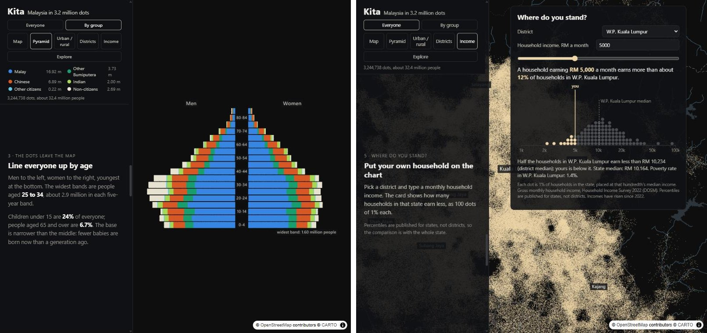
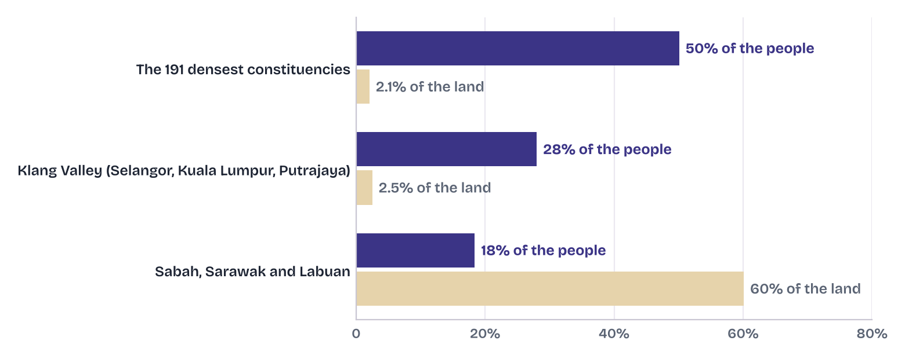
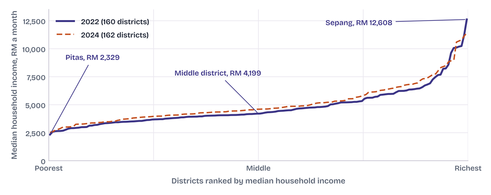

The question
Census tables say how many people live in each place and who they are, but tables are hard to feel. A dot for every ten people shows at a glance where the country is crowded and where it is almost empty, and how the mix of people changes from one place to the next. Moving the same dots into charts keeps the link between the map and the numbers: the dots that form the age pyramid are the same people who were on the map a moment before.
Income is where people's sense of their country is often least accurate. So the story asks the reader to draw how district incomes rise before showing the real curve, and then to type in their own household income and see how many households in their state earn less.
The data
| What | Source | Used for |
|---|---|---|
| Census 2020 by state constituency, parliamentary seat and district, with boundaries | Department of Statistics Malaysia (DOSM), open data on GitHub | How many people live in each of 613 small areas, and their group, sex, age and urban or rural mix |
| Population by district, sex, age and group | OpenDOSM | The sex and age mix within each group |
| Household Income Survey 2022 (and 2024 for comparison) | OpenDOSM | District medians, state percentiles, Gini and poverty rates |
| Population grid, 400 m hexagons (2023) | Kontur, on the Humanitarian Data Exchange | Where dots fall inside each small area |
| Base map | CARTO Dark Matter, from OpenStreetMap data | The dark background |
The census totals come only from DOSM. The Kontur grid decides where inside each area the dots fall, never how many there are.
One story, five notebooks
The page is a single scrolling story. A column of text on the left moves the map and the charts on the right, and buttons at the top jump to any part. On a phone the story sits in a sheet at the bottom of the screen.
| Step | What the reader sees |
|---|---|
| 1 The country in dots | 3.24 million dots, then the Klang Valley and Borneo up close. Pointing at any area shows its census numbers. |
| 2 Who lives where | The dots coloured by six census groups; one group can be shown alone. |
| 3 The dots leave the map | Every dot flies into an age pyramid, then into urban and rural blocks, and back. |
| 4 First, a guess | The reader draws how the 160 district median incomes rise, then sees the real curve and a beeswarm of all districts. |
| 5 Where do you stand? | A district and a monthly household income place the reader among 100 dots, one for each hundredth of the state's households. |
| 6 Explore | Filters by group, sex, urban or rural and age, and a search for any district. |
Five Python notebooks prepare the data: 00 checks every source, 01 places the dots, 02 writes them for the web, 03 adds town names and the small areas, and 04 prepares the income data. The page runs on MapLibre GL JS and deck.gl, and the graphics card moves all 3.24 million dots at once.

What the dots show
Half of everyone lives on 2% of the land
The bright band runs down the west coast of the peninsula, from Alor Setar through Penang, Ipoh and Kuala Lumpur to Johor Bahru. The Klang Valley alone (Selangor, Kuala Lumpur and Putrajaya) holds 28% of the people on 2.5% of the land, about 9 million people. Across the South China Sea the balance is reversed: Sabah, Sarawak and Labuan cover 60% of the land but hold 18% of the people, mostly along the coast and the big rivers.


Six groups, and where they live
Malay dots fill most of the peninsula's north and east. In Sabah, Sarawak and Labuan the largest group is Other Bumiputera, 55% of the dots there. Chinese and Indian dots gather in the west coast towns. In the Klang Valley the colours mix, but the mix still changes clearly from one constituency to the next. Non-citizens are 2.7 million people, 8% of everyone, but about 24% of Sabah's 3.4 million. The census counts everyone living in the country, so the story says "people", not "Malaysians", for its totals.
A young country, three quarters urban
Lined up by age, the widest five-year bands are people aged 25 to 34, about 2.9 million in each. The base of the pyramid is narrower than its middle: fewer babies are born now than a generation ago. Three in four people, 24.4 million, live in urban areas and 8.1 million in rural ones.
District incomes: a long flat middle and a steep top
Most districts sit close together. The middle district's median is RM 4,199, and 107 of the 160 districts have medians below RM 5,000. Only ten reach RM 8,000 or more, and eight of those ten are in the Klang Valley. A straight line from the poorest district to the richest misses this shape: the curve stays low and flat for most of the way and climbs steeply only at the very end.
The 2024 survey shows the same shape, a little higher. Its 162 districts run from RM 2,525 (Pantu, Sarawak) to RM 11,404 (Ulu Langat, Selangor), and the middle of the ranking is at about RM 4,590. Of the 150 districts with the same name in both surveys, 135 had a higher median in 2024; the typical rise was 8.9%, in ringgit of the day, not adjusted for prices.


The same income, very different places
A household earning RM 5,000 a month is below the middle in Kuala Lumpur, where half the households earn more than RM 10,000, but above the middle in Sabah. The "Where do you stand?" step shows this with 100 dots, one for each hundredth of the state's households, placed at that hundredth's income. Percentiles are published for states, not districts, so the comparison is always with the whole state.
How the dots are placed
Each of the 613 small areas (600 state constituencies and the 13 parliamentary seats of the Federal Territories) gets one dot for every ten of its people, with remainders rounded so the national total is exact. Inside the area, dots go to the Kontur hexagons in proportion to their population, and each dot lands at a random point inside its hexagon. Where Kontur holds less than half of an area's census people (Putrajaya and Putatan), the missing people are spread evenly over the area. Each area's group counts are then shuffled among its dots; Bumiputera dots are split into Malay and Other Bumiputera with their district's share, and sex and age come from the district's table for that group. Each district's urban count is given to its densest cells first, and the rest are rural. The dots are written for the web as eight binary files of about 4.9 MB each, which the page streams in as it loads.
Problems in the data, and how they were handled
- Constituencies that cross district lines. People are counted by state constituency, but incomes and the age mix are published by district, and the two do not nest. District totals rebuilt from the dots are close (median difference 0.9%) but a few districts are far off, such as Selangau in Sarawak. Totals on the page always come from the census tables, not from counting dots.
- Mixes that were missing. Some district and group pairs had no published sex and age mix. These fall back to the state mix, and then to the national one.
- Names that did not match. "Larut dan Matang" in the census is "Larut Dan Matang" in the boundary file; names are compared in lower case.
- Too many dots for the whole country. At the national view, 3.24 million dots merge into a solid glow whatever their opacity. Below a set zoom the page shows pre-drawn density images instead, and cross-fades to live dots as the reader zooms in.
- Two groups that looked alike. In the first palette, Chinese and Non-citizens were hard to tell apart on the dark map. The six colours were replaced with a set checked for separation under the common forms of colour blindness.
- Moving 3.24 million dots smoothly. The fastest way to load the dots into deck.gl cannot animate them, so positions are read through small accessor functions that let the graphics card fly every dot between the map and each chart.
Limits
Dots are modelled positions, not addresses. Within each small area the groups, ages and sexes are scattered at random among its dots, so the map shows differences between areas, never between streets or households. Sex and age by group are published by district, so they follow the district mix, and urban or rural is a modelled split of each district's urban count, densest places first. The Kontur grid is a 2023 estimate used only for placement; where it is wrong, dots sit in the wrong part of an area but the area's total stays right. The income figures are from 2022, before the most recent rises, and the state percentiles describe the spread of incomes, not the survey's uncertainty, which is not published.
Where this could be useful
- Explaining a census: a picture of where people live and who they are that a general reader can take in at once, with the exact numbers one point away.
- Social and market analysis: filtering the dots by age, group and urban or rural to see where a population of interest, such as older people in rural areas, actually lives.
- Talking about income: the drawing step and the household step test what readers believe before showing the data, which makes the shape of the income curve harder to forget.
About
Lik Ren Tai applies data science in two fields: environmental science and railway systems. This project was built with Python (pandas, GeoPandas, h3, NumPy, Pillow, matplotlib), MapLibre GL JS and deck.gl.
Census 2020 and boundaries: Department of Statistics Malaysia (DOSM), dosm-malaysia/data-open on GitHub. Population by district and Household Income Survey 2022 and 2024: OpenDOSM (CC BY 4.0). Population grid: Kontur Population, via the Humanitarian Data Exchange (CC BY 4.0). Base map: © CARTO, © OpenStreetMap contributors. This is an independent project, not affiliated with or endorsed by any of the sources.